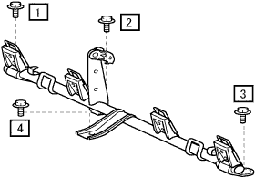
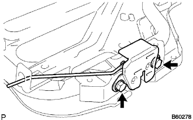
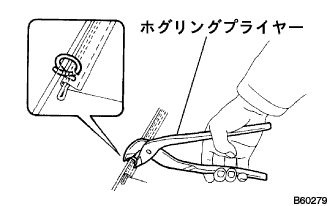
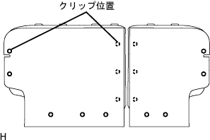
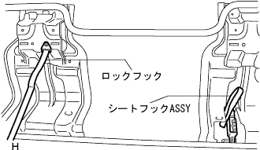

リヤシートASSY(分割可倒式) 組み付け |
| 1. チャイルドレストレイント シート アンカ ブラケット RH取り付け |
図の4のボルトを仮締めする。
|  |
ボルトを、図の1→2→3→4の順に締め付ける。
フロアカーペットを取り付ける。
| 2. リヤシートバック ロックASSY LH取り付け |
リヤシートバツクフレームLHにボルト2本で、リヤシートバツクロックASSY LHを締め付ける。
| 3. リヤシートバック ロックASSY RH取り付け |
|  |
リヤシートバツクフレームRHにボルト2本で、リヤシートバツクロックASSY RHを締め付ける。
| 4. リヤシートバツク アンダ クロース取り付け |
リヤシートバツクフレームASSYに、リヤシートバツクアンダクロスを取り付ける。
| 5. リヤシートバック パッドSUB-ASSY(カバー ツキ) LH取り付け |
|  |
ホグリングプライヤーを使用して、新品のホグリングでリヤシートバツクカバー & パッドを取り付ける。
|  |
リヤシートバツクカバーに新品のクリップを取り付ける。
| 6. リヤシートバック パッドSUB-ASSY(カバー ツキ)取り付け |
| 7. リヤシートバックストップボタン グロメット取り付け |
グロメットを取り付ける。
| 8. リヤシートヘッドレスト サポート取り付け |
シートバツクASSYにヘッドレストサポート6個を取り付ける。
| 9. リヤシートバックストップレリーズ ボタン取り付け |
手でレリーズボタンを回し、リヤシートバツクストップレリーズボタンを取り付ける。
| 10. リヤシート ヘッドレストASSY CTR取り付け |
リヤシートバツクASSYにリヤシートヘッドレストASSY CTRを取り付ける。
| 11. リヤシート ヘッドレストASSY取り付け |
リヤシートバツクASSYにリヤシートヘッドレストASSY2個を取り付ける。
| 12. リヤシート トラック ブラケット カバー取り付け |
リヤシートクッションフレームASSYに、リヤシートトラツクブラケツトカバーをツメをかん合させて取り付ける。
| 13. リヤシート フックASSY RH取り付け |
|  |
ボルト2本で、リヤシートフックASSY RHを締め付ける。
| 14. リヤシート クッション ロック フック RH取り付け |
ボルト1本で、リヤシートクッションロックフックRHを締め付ける。
| 15. リヤシートクッションアンダ クロス取り付け |
リヤシートクッションフレームASSYに、リヤシートクッションアンダクロスを取り付ける。
| 16. リヤシート クッション カバー ＆ パッド取り付け |
ホグリングプライヤーを使用して、新品のホグリングでリヤシートクッションカバー & パッドを取り付ける。